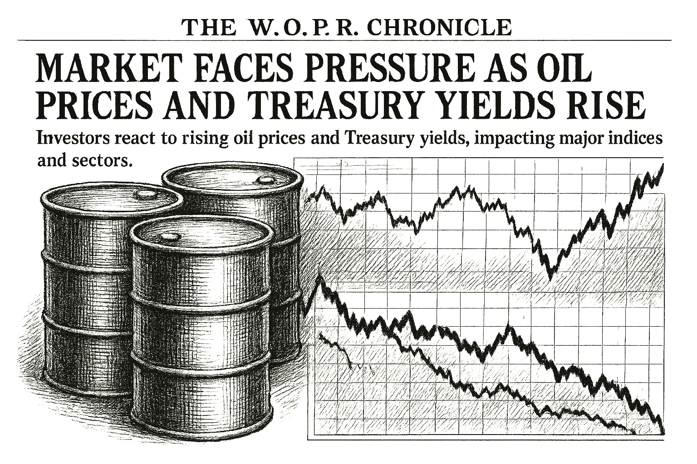

SPY
Current: $775.83Change: +11.84 (+1.55%)
Updated:
Source: yahoo_chartFreshness: fresh


Investors react to rising oil prices and Treasury yields, impacting major indices and sectors.

Today's Headline: Market Faces Pressure as Oil Prices and Treasury Yields Rise
Setup: Investors react to rising oil prices and Treasury yields, impacting major indices and sectors.
Primary Topic: Market Dynamics
Specific Development: Oil prices surged alongside Treasury yields, prompting declines in major U.S. indices.
Why Today Is Different: Today's market reaction is intensified by geopolitical tensions and upcoming earnings reports, particularly in the tech sector.
Secondary Topics: Geopolitical tensions; Earnings season; Sector performance
Tone: cautious
Sectors: Energy; Utilities; Tech
Companies: Micron; Samsung; Taiwan Semiconductor
Commodities: Oil; Gold; Copper
Countries Or Regions: U.S.; Iran
Macro Themes: Inflation; Interest rates
Why This Story: The interplay between rising oil prices and Treasury yields is reshaping market sentiment ahead of critical earnings reports.
Why This Matters: Dow Jones Futures Fall As Oil Prices, Treasury Yields Jump; Samsung, Micron, Taiwan Semi, Sandisk In Focus is the clearest current evidence-led frame for Joshua's observation-only review; missing facts remain explicit intelligence gaps.

Summary: Global markets are reacting to rising oil prices and Treasury yields, with U.S. futures indicating a cautious start.
What Happened Overnight: U.S. futures declined as oil prices surged and Treasury yields increased.
What Changed Materially: Oil prices rose significantly, impacting investor sentiment and market dynamics.
Which Assets Sectors Are Affected: Energy and utilities sectors are seeing upward pressure, while tech stocks are under scrutiny ahead of earnings.
Does It Look Like Noise Or A Real Regime Input: This appears to be a real regime input due to the geopolitical context and economic indicators.
Why This Matters: Joshua can use verified cross-asset moves and deterministic risk context while keeping causation explicitly unresolved.

No high-priority earnings expectation block is supported by the current canonical snapshot.

- WOPR learning pipeline: Learning present — untrusted
- Candidates evaluated 24h: 0
- Current gate: Learning trust
- Notification ledger events in 24h: 21
- Pending orders created/canceled/filled/expired: 4/2/2/0
- Pending lifecycle interpretation: Pending-order cancellations have trackable reasons and no obvious rapid churn pattern.
- Portfolio risk: Label: High / Score: 100.0
- Latest intelligence gap report: intelligence_gap_report_2026-10-04.pdf
Why This Matters: The active gate is Learning trust, so the key question is why candidates are stopping before approval, not how to force trades.

- Sentinel role: infrastructure and operational status only.
- State: ONLINE
- Last successful validation: 2026-10-08T14:14:03.239164+00:00
- Payloads accepted/rejected: 24892/0
- Node health score: 100
Why This Matters: Sentinel is ONLINE, so Joshua should use its context only to the extent the latest accepted pulse is fresh and authenticated.

CANDIDATES MOVING THROUGH JOSHUA'S INVESTMENT-REVIEW WORKFLOW
FROZEN DAILY BRIEF SNAPSHOT | 2026-10-08T14:10:54.460851+00:00
QUEUE SUMMARY | Investment Ready: 0 | Waiting for Price: 0 | Waiting for Evidence: 1 | Research Underway: 1 | Governance Hold: 4 | Monitor Only: 0
Investment-ready status: No candidates are currently Investment Ready.
#5 NVDA - Waiting for Evidence [NEW]
Joshua's Thesis: Positive thesis not yet established.
Why Waiting: Positioning gate failed.
Price: 235.83 now; 230.98 preferred entry
What Unlocks It: Clear valuation support; Evidence that the business quality matches the risk being taken; Independent evidence streams pointing the same way
Portfolio Fit: 61.1/100 — HIGH
Portfolio Fit Drivers: projected Technology exposure 40.0%; projected AI infrastructure exposure 40.0%; candidate amount $100 vs $150 currently allocated
Candidate Risk: 30.9/100 — LOW
Risk Drivers: projected Technology exposure 40.0%; projected AI infrastructure exposure 40.0%; candidate amount $100 vs $150 currently allocated
Next: Positioning status must no longer be warning. Owner: Joshua.
#6 AVGO - Governance Hold [Moved Up 8->6]
Joshua's Thesis: Positive thesis not yet established.
Why Waiting: Governance gate has not cleared.
Price: 368.46 now; 367.90 preferred entry
What Unlocks It: Governance gate clears; Clear valuation support; Evidence that the business quality matches the risk being taken
Portfolio Fit: 61.1/100 — HIGH ↑
Portfolio Fit Drivers: projected Technology exposure 40.0%; projected AI infrastructure exposure 40.0%; candidate amount $100 vs $150 currently allocated
Candidate Risk: 30.9/100 — LOW ↓
Risk Drivers: projected Technology exposure 40.0%; projected AI infrastructure exposure 40.0%; candidate amount $100 vs $150 currently allocated
Next: Re-evaluate after the recorded gate clears. Owner: Columbo.
#10 PLTR - Governance Hold [Moved Up 12->10]
Joshua's Thesis: Positive thesis not yet established.
Why Waiting: Governance gate has not cleared.
Price: 201.40 now; 188.68 preferred entry
What Unlocks It: Governance gate clears; Clear valuation support; Evidence that the business quality matches the risk being taken
Portfolio Fit: 61.1/100 — HIGH ↑
Portfolio Fit Drivers: projected Technology exposure 40.0%; projected AI software exposure 40.0%; candidate amount $100 vs $150 currently allocated
Candidate Risk: 30.9/100 — LOW ↓
Risk Drivers: projected Technology exposure 40.0%; projected AI software exposure 40.0%; candidate amount $100 vs $150 currently allocated
Next: Re-evaluate after the recorded gate clears. Owner: Columbo.
#14 DIA - Research Underway
Joshua's Thesis: Positive thesis not yet established.
Why Waiting: Research evidence is still being gathered.
Price: Current price unavailable.; Preferred entry not established.
What Unlocks It: Clear valuation support; Evidence that the business quality matches the risk being taken; Independent evidence streams pointing the same way
Portfolio Fit: 61.1/100 — HIGH ↓
Portfolio Fit Drivers: projected ETF exposure 40.0%; projected Broad market exposure 40.0%; candidate amount $100 vs $150 currently allocated
Candidate Risk: 30.9/100 — LOW ↑
Risk Drivers: projected ETF exposure 40.0%; projected Broad market exposure 40.0%; candidate amount $100 vs $150 currently allocated
Next: Clear valuation support; Evidence that the business quality matches the risk being taken; Independent evidence streams pointing the same way. Owner: Columbo.
#21 SPCX - Governance Hold [Moved Down 20->21]
Joshua's Thesis: Positive thesis not yet established.
Why Waiting: Governance gate has not cleared.
Price: 165.38 now; 153.06 preferred entry
What Unlocks It: Governance gate clears; Clear valuation support; Evidence that the business quality matches the risk being taken
Portfolio Fit: 0.0/100 — VERY LOW
Portfolio Fit Drivers: projected Unclassified exposure 90.0%; projected Unclassified exposure 90.0%; candidate amount $100 vs $150 currently allocated
Candidate Risk: 100.0/100 — VERY HIGH
Risk Drivers: projected Unclassified exposure 90.0%; projected Unclassified exposure 90.0%; candidate amount $100 vs $150 currently allocated
Next: Re-evaluate after the recorded gate clears. Owner: Advisory Committee.
#22 RCL - Governance Hold [Moved Down 21->22]
Joshua's Thesis: Positive thesis not yet established.
Why Waiting: Governance gate has not cleared.
Price: 281.70 now; 286.10 preferred entry
What Unlocks It: Governance gate clears; Clear valuation support; Evidence that the business quality matches the risk being taken
Portfolio Fit: 0.0/100 — VERY LOW
Portfolio Fit Drivers: projected Unclassified exposure 90.0%; projected Unclassified exposure 90.0%; candidate amount $100 vs $150 currently allocated
Candidate Risk: 100.0/100 — VERY HIGH
Risk Drivers: projected Unclassified exposure 90.0%; projected Unclassified exposure 90.0%; candidate amount $100 vs $150 currently allocated
Next: Re-evaluate after the recorded gate clears. Owner: Columbo.
Since the prior Chronicle: ANGX - Removed
Observation only. This section creates no recommendation, order, authority, or execution instruction.

- If NVDA reaches the recorded price condition <= 230.98, which recorded evidence and governance requirements would still remain?
- Which recorded governance requirement must clear before AVGO can advance?
- Which recorded governance requirement must clear before PLTR can advance?
- Which recorded missing evidence item would most change Joshua's current view of DIA?

The rise in oil prices and Treasury yields is reshaping market sentiment, particularly impacting tech stocks ahead of earnings. Investors are cautious as geopolitical tensions add to the uncertainty, suggesting a potential shift in sector performance.

Compared to: 2026-10-07
- Market weather: Still Balanced
- Top opportunity: Still DELL
- Joshua gate: Evidence -> Learning trust
- 2Y Treasury.last_price: 4.77 -> 4.77 (unchanged); 2Y Treasury.last_price changed 0.00% versus the prior frozen Chronicle snapshot.
- 2Y Treasury.percent_change: -0.41753653444677374 -> -0.41753653444677374 (unchanged); 2Y Treasury.percent_change changed 0.00% versus the prior frozen Chronicle snapshot.
- 10Y Treasury.last_price: 5.28 -> 5.28 (unchanged); 10Y Treasury.last_price changed 0.00% versus the prior frozen Chronicle snapshot.
- 10Y Treasury.percent_change: 0.18975332068312478 -> 0.18975332068312478 (unchanged); 10Y Treasury.percent_change changed 0.00% versus the prior frozen Chronicle snapshot.
- 30Y Treasury.last_price: 5.67 -> 5.67 (unchanged); 30Y Treasury.last_price changed 0.00% versus the prior frozen Chronicle snapshot.
- 30Y Treasury.percent_change: 0.5319148936170257 -> 0.5319148936170257 (unchanged); 30Y Treasury.percent_change changed 0.00% versus the prior frozen Chronicle snapshot.
- SPY.last_price: 775.11 -> 775.825 (up); SPY.last_price changed 0.09% versus the prior frozen Chronicle snapshot.
- SPY.percent_change: 1.4555164334611717 -> 1.5491040458644794 (up); SPY.percent_change changed 6.43% versus the prior frozen Chronicle snapshot.
- QQQ.last_price: 752.32 -> 754.38 (up); QQQ.last_price changed 0.27% versus the prior frozen Chronicle snapshot.
- QQQ.percent_change: 1.3867363853213588 -> 1.6643531932671218 (up); QQQ.percent_change changed 20.02% versus the prior frozen Chronicle snapshot.
- IWM.last_price: 276.53 -> 276.3 (down); IWM.last_price changed 0.08% versus the prior frozen Chronicle snapshot.
- IWM.percent_change: -0.8924091462977598 -> -0.974840513224848 (down); IWM.percent_change changed 9.24% versus the prior frozen Chronicle snapshot.

The significant rise in oil prices and Treasury yields has shifted the market outlook, prompting a reassessment of risk and sector performance.
No new warnings issued; however, the market remains sensitive to geopolitical developments.
Portfolio Construction Review
Current allocation: 149.69 allocated.
Largest sector: Unclassified at 83.4%.
Largest theme: Unclassified at 83.4%.
Diversification: Concentrated (16.6).
Cash allocation: 85.0% unallocated.
Recommended exposure: DELL at portfolio-fit score 61.1.
Portfolio fit: DELL has a mixed portfolio fit; the diversification improvement is not decisive yet.
Why This Matters: Portfolio Manager evaluates whether an opportunity improves this portfolio; it does not select the investment, vote, or authorize execution.

Today, focus on the implications of rising oil prices and Treasury yields on market sentiment and sector performance.

| Can trigger trade | no |
| Can modify trade rules | no |
| Can add watch items | yes |
| Can add review questions | yes |
| Can adjust confidence notes | yes |
| Input policy | external_intelligence_plus_sanitized_internal_observations |
| External policy | The Editor-in-Chief synthesizes current world/market context where available and labels unknowns; provider/model provenance remains separate. |
| Internal policy | Joshua/WOPR/Sentinel facts are supplied as sanitized observation-only summaries. |
| Editorial model | gpt-4o-mini |
- Selected by a deterministic daily rotation through symbols already present in the persisted Chronicle snapshot.
- Next earnings: October 22, 2026 (time unknown); status: scheduled.
- Source: finnhub_earnings_calendar.
- Attacks on tankers in Hormuz hit highest of any week since start of Iran war, sources say - Reuters
- Desk: geopolitical; source: Reuters; linked symbols: none recorded.
- Published: 10/7/26 07:26 MST.
- High-impact watch: FOMC Meeting Two-day meeting, October 27 - 28 Press Conference - 10/28/26 11:00 MST.
- Affected assets: US equities, Treasuries, USD; source: federal_reserve_calendar.
- TSLA earnings: October 20, 2026, after close.
- LTC earnings: October 22, 2026, time unknown.
- Utilities: 3.76% session performance; source: persisted sector ledger.
- Energy: 3.38% session performance; source: persisted sector ledger.
- Consumer Staples: 2.75% session performance; source: persisted sector ledger.
- BTCUSD: -4.66% recorded move; price: 82453.81.
- Session: 24h; catalyst status: no_verified_catalyst; source: yahoo_chart.
- Earnings reports from major tech companies; why it matters: These reports could significantly influence tech stock valuations and market sentiment.
- State: broad_weakness; score: 27.50/100; advance/decline ratio: 0.86.
- Above 50-day average: 24.40%; sample: 119; provider: sentinel_sampled_breadth.
- Decision outcomes evaluated: 16; currently untestable: 0.
- Warning review: unknown 2; confidence calibration: insufficient_sample.
- Current macro regime: narrow_mega_cap_risk_on; change probability: unavailable.
- Risk dashboard: neutral (54/100); breadth: broad_weakness; sentiment: neutral.
- Scenario board only - a current-state observation, not a forecast or execution instruction.

- Founded Bridgewater Associates and popularized systematic macro analysis, risk parity, and explicit decision principles.
- Published quotation: "He who lives by the crystal ball will eat shattered glass."
- Published framework: Translate economic cause-and-effect relationships into explicit rules, diversify across independent return drivers, balance rather than merely add risk, and stress-test decisions against different environments.
- Committee lens: Dalio asks Joshua to model the system, diversify evidence and exposures, and test a proposal across inflation, growth, liquidity, and policy regimes.
- Public philosophy profile only; no participation, endorsement, or current recommendation is implied.
- Which recorded governance requirement must clear before PLTR can advance?
- DELL: No canonical symbol-specific material event is linked.
- Attach the missing DELL evidence before the next committee review.
- Define evidence that would confirm or retire each unresolved warning before the next review window.
- If NVDA reaches the recorded price condition <= 230.98, which recorded evidence and governance requirements would still remain?
- Which recorded governance requirement must clear before AVGO can advance?
- Which recorded governance requirement must clear before PLTR can advance?
- Which recorded missing evidence item would most change Joshua's current view of DIA?
- Evidence agenda: DELL - No canonical symbol-specific material event is linked.
- Proposed review: Oil price movements; why it matters: Rising oil prices could indicate economic weakness, affecting market sentiment.
- Canonical instruments reviewed: 24; delayed 6, fresh 18.
- Leading sources: yahoo_chart (21), treasury_official_yield_curve (3).
- Snapshot recorded: 10/8/26 07:11 MST.
Market Faces Pressure as Oil Prices and Treasury Yields Rise
Storm meter: Balanced
#5 NVDA - Waiting for Evidence [NEW]
Observation mode: observation_only
Watch: Oil price movements; why it matters: Rising oil prices could indicate economic weakness, affecting market sentiment.
Question: If NVDA reaches the recorded price condition <= 230.98, which recorded evidence and governance requirements would still remain?